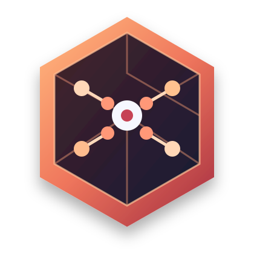

Near the flagship?
How much of that extra capability do everyday tasks need?
Sonnet closes the gap. Opus still sits ahead and costs more.
00:00–00:09 · HIGH · approach
CAPABILITY / COST
NEAR THE
FLAGSHIP?
A SMALLER PRICE. A SURPRISINGLY SHORT GAP.

SONNET 5.5OPUS 5.5